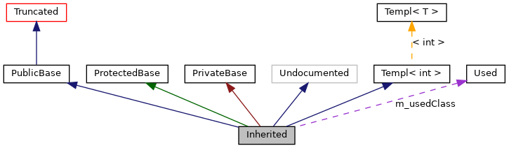

Această pagină arată modul în care trebuie să interpretaţi grafurile generate de doxygen.
Consideraţi următorul exemplu:
class Invisible { };
class Truncated : public Invisible { };
class Undocumented { };
class PublicBase : public Truncated { };
template<class T> class Templ { };
class ProtectedBase { };
class PrivateBase { };
class Used { };
class Inherited : public PublicBase,
protected ProtectedBase,
private PrivateBase,
public Undocumented,
public Templ<int>
{
private:
Used *m_usedClass;
};
Dacă tagul MAX_DOT_GRAPH_HEIGHT din fişierul de configurare este setat la 200, acesta este graful rezultat:

Căsuţele din partea de sus au următoarea semnificaţie:
-
O căsuţă neagră reprezintă structura sau clasa pentru care graful este generat.
-
O căsuţă cu marginea neagră reprezintă o structură sau o clasă documentate.
-
O căsuţă cu marginea gri reprezintă o structură sau o clasă nedocumentate.
-
O căsuţă cu marginea roşie reprezintă o structură sau o clasă documentate, pentru care nu toate relaţiile de moştenire/incluziune sunt arătate. Un graf este tăiat dacă nu încape în marginile specificate.
Săgeţile au următoarea semnificaţie:
-
O săgeată de un albastru închis este folosită când avem o relaţie de moştenire publică între două clase.
-
O săgeată de un verde închis este folosită când avem o moştenire protejată.
-
O săgeată de un roşu închis este folosită când avem o moştenire privată.
-
O săgeată violetă punctată este folosită pentru o clasă conţinută sau folosită de o altă clasă. Săgeata este marcată cu variabila(e) prin care este accesibilă clasa sau structura spre care este îndreptată.